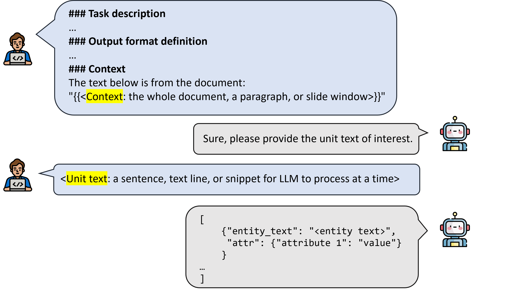

Extractors
An extractor implements a prompting algorithm for information extraction. There are four extractor families: StrctExtractor, FrameExtractor, AttributeExtractor and RelationExtractor.
The StructExtractor extracts document level structured data that is not entity-based.
The FrameExtractor extracts named entities with attributes ("frames"). The AttributeExtractor extracts additional attributes and serve as an assistant class for FrameExtractor. The RelationExtractor extracts the relations (and relation types) between frames. Under FrameExtractor, we made pre-packaged extractors that does not require much configuation and are often sufficient for regular use case (Convenience FrameExtractor).

Unit-Context Schema
Struct extractor and Frame extractors in general adopts an unit-context schema. The purpose is to avoid having LLM to process long context and suffer from needle in the haystack challenge. We split an input document into multiple units. LLM only process a unit of text at a time.
- Unit: a text snippet that LLM extrator will process at a time. It could be a sentence, a line of text, or a paragraph.
- Context: the context around the unit. For exapmle, a slidewindow of 2 sentences before and after. Context is optional.

StructExtractor
The StructExtractor extracts document-level structured data that is not entity-based. The extracted information does not have to be mentioned in the text. For example, given a clinical note, we want to extract the Document Type (e.g., Discharge Summary, Radiology Report, etc.), Author Specialty (e.g., Cardiologist, Radiologist, etc.), and Urgency Level (e.g., Routine, Stat, etc.). These information might not be explicitly mentioned in the note text. Another usage is when we do not care about the entity spans, but only care about the overall information in the document. For example, in a pathology report, we want to extract the Cancer Type (e.g., Lung Cancer, Breast Cancer, etc.) and Stage (e.g., Stage I, Stage II, etc.).
The information to be extracted is defined in the prompt_template. The schema must be a JSON/dict format with key-value pairs. The keys are the field names, and the values are the field descriptions. For example, the prompt template could be:
{
"Cancer_type": "the type of cancer mentioned in the pathology report (e.g., Lung Cancer, Breast Cancer, etc.)",
"Stage": "the stage of the cancer mentioned in the pathology report (e.g., Stage I, Stage II, etc.)"
}
To define a StructExtractor:
from llm_ie import BasicStructExtractor
extractor = BasicStructExtractor(
inference_engine=llm,
prompt_template=prompt_temp,
)
cancer_info = extractor.extract_struct(note_text)
Alternatively, we can define the unit and context chunkers explicitly. For example, using SentenceUnitChunker to chunk the document into sentences, and SlideWindowContextChunker to provide a slide window of 2 sentences before and after each sentence as context. For each sentence, the extractor will prompt LLM to extract the structured information defined in the prompt_template. After processing all sentences, the extractor will aggregate the outputs from all sentences to generate the final structured output for the entire document (see ). Custom aggregation functions can be defined by passing in the aggregation_func parameter in the StructExtractor constructor.
from llm_ie import SentenceUnitChunker, SlideWindowContextChunker, StructExtractor
sentence_chunker = SentenceUnitChunker()
context_chunker = SlideWindowContextChunker(window_size=2)
extractor = StructExtractor(
unit_chunker=sentence_chunker,
context_chunker=context_chunker,
inference_engine=llm,
prompt_template=prompt_temp,
)
cancer_info = extractor.extract_struct(note_text)
FrameExtractor
The FrameExtractor extracts named entities with attributes ("frames") from the input document. The extracted frame includes a subtext entity_text that must be present in the input document, along with optional attributes defined in the prompt_template. The typical usage is to extract mentions of medical concepts (e.g., diagnoses, medications, procedures, etc.) from clinical notes.
DirectFrameExtractor
The DirectFrameExtractor implements the unit-context schema. We start by defining the unit using one of the UnitChunker. The SentenceUnitChunker chunks the input document into sentences. Then, we define how context should be provided by choosing one of the ContextChunker. The SlideWindowContextChunker parse 2 units (sentences in this case) before and after each unit as context. For more options, see Chunkers.
from llm_ie import DirectFrameExtractor, SentenceUnitChunker, SlideWindowContextChunker
unit_chunker = SentenceUnitChunker()
context_chunker = SlideWindowContextChunker(window_size=2)
extractor = DirectFrameExtractor(inference_engine=llm,
unit_chunker=unit_chunker,
context_chunker=context_chunker,
prompt_template=prompt_template)
frames, messages_log = extractor.extract_frames(note_text, concurrent=True, return_messages_log=True)
ReviewFrameExtractor
The ReviewFrameExtractor is a child of DirectFrameExtractor. It adds a review step after the initial output.
There are two review modes:
- Addition mode: add more frames while keeping current. This is efficient for boosting recall.
- Revision mode: regenerate frames (add new and delete existing).
Under the Addition mode (review_mode="addition"), the review_prompt needs to instruct the LLM not to regenerate existing extractions:
... You should ONLY add new diagnoses. DO NOT regenerate the entire answer.
Under the Revision mode (review_mode="revision"), the review_prompt needs to instruct the LLM to regenerate:
... Regenerate your output.
It is recommended to leave the review_prompt=None and use the default, unless there are special needs.
from llm_ie import ReviewFrameExtractor, SentenceUnitChunker, SlideWindowContextChunker
unit_chunker = SentenceUnitChunker()
context_chunker = SlideWindowContextChunker(window_size=2)
extractor = ReviewFrameExtractor(inference_engine=llm,
unit_chunker=unit_chunker,
context_chunker=context_chunker,
prompt_template=prompt_template,
review_mode="addition")
Post-processing
Since the output entity text from LLMs might not be consistent with the original text due to the limitations of LLMs, we apply JSON repair, case-sensitive, fuzzy search, and entity overlap settings in post-processing to find the accurate entity span.
JSON repair
Automatically detect and fix broken JSON format with json_repair.
Case sensitive
set case_sensitive=False to allow matching even when LLM generates inconsistent upper/lower cases.
Fussy match
In the extract_frames() method, setting parameter fuzzy_match=True applies Jaccard similarity matching. The most likely spans will be returned as entity text.
Entity overlap
Set allow_overlap_entities=True to cpature overlapping entities. Note that this can cause multiple frames to be generated on the same entity span if they have same entity text.
Concurrent Optimization
For concurrent extraction (recommended), set concurrent=True in FrameExtractor.extract_frames. The concurrent_batch_size sets the batch size of units to be processed in cocurrent.
Convenience FrameExtractor
The DirectFrameExtractor and ReviewFrameExtractor provide flexible interfaces for all settings. However, in most use cases, simple interface is preferred. We pre-package some common (and high performance) settings for convenience.
BasicFrameExtractor
The BasicFrameExtractor prompts LLM with the entire document.
from llm_ie import BasicFrameExtractor
extractor = BasicFrameExtractor(inference_engine, prompt_template)
It is equivalent to:
from llm_ie import DirectFrameExtractor, WholeDocumentUnitChunker, NoContextChunker
unit_chunker = WholeDocumentUnitChunker()
context_chunker = NoContextChunker()
extractor = DirectFrameExtractor(inference_engine=llm,
unit_chunker=unit_chunker,
context_chunker=context_chunker,
prompt_template=prompt_template)
BasicReviewFrameExtractor
Similar to the BasicFrameExtractor, but adds a revieww step after the initial outputs.
from llm_ie import BasicReviewFrameExtractor
extractor = BasicReviewFrameExtractor(inference_engine, prompt_template, review_mode="revision")
This is equivalent to:
from llm_ie import ReviewFrameExtractor, WholeDocumentUnitChunker, NoContextChunker
unit_chunker = WholeDocumentUnitChunker()
context_chunker = NoContextChunker()
extractor = ReviewFrameExtractor(inference_engine=llm,
unit_chunker=unit_chunker,
context_chunker=context_chunker,
prompt_template=prompt_template,
review_mode="revision")
SentenceFrameExtractor
The SentenceFrameExtractor prompts LLMs to extract sentence-by-sentence. The context_sentences sets number of sentences before and after the sentence of interest to provide additional context. When context_sentences=2, 2 sentences before and 2 sentences after are included in the user prompt as context. When context_sentences="all", the entire document is included as context. When context_sentences=0, no context is provided and LLM will only extract based on the current sentence of interest.
from llm_ie import SentenceFrameExtractor
# slide window of 2 sentences as context
extractor = SentenceFrameExtractor(inference_engine, prompt_template, context_sentences=2)
It is equivalent to:
from llm_ie import DirectFrameExtractor, SentenceUnitChunker, SlideWindowContextChunker
unit_chunker = SentenceUnitChunker()
context_chunker = SlideWindowContextChunker(window_size=2)
extractor = DirectFrameExtractor(inference_engine=llm,
unit_chunker=unit_chunker,
context_chunker=context_chunker,
prompt_template=prompt_template)
SentenceReviewFrameExtractor
The SentenceReviewFrameExtractor performs sentence-level extraction and review. The example below use no context, revision review mode.
from llm_ie import SentenceReviewFrameExtractor
extractor = SentenceReviewFrameExtractor(inference_engine, prompt_temp, context_sentences=0, review_mode="revision")
It is equivalent to:
from llm_ie import ReviewFrameExtractor, SentenceUnitChunker, NoContextChunker
unit_chunker = SentenceUnitChunker()
context_chunker = NoContextChunker()
extractor = ReviewFrameExtractor(inference_engine=llm,
unit_chunker=unit_chunker,
context_chunker=context_chunker,
prompt_template=prompt_template,
review_mode="revision")
AttributeExtractor
Although the FrameExtractor can extract both named entity and attributes in a single prompt, for some use cases where many attributes are required, offloading some attributes to the AttributeExtractor can improve the accuracy. For examlpe, in clinical notes, we want to extract treatments and diagnoses. For treatment frames, attributes like drug name, strength, dosage, frequency, and route are required; for diagnosis frames, diagnosed date, status, and ICD code are required. In such case, having a frame extractor to handle everything would be challenging. We can divide the treatment frames and diagnosis frames to their own attribute extractors
To define an AttributeExtractor
from llm_ie import AttributeExtractor
extractor = AttributeExtractor(
inference_engine=llm,
prompt_template=prompt,
)
The prompt must include placeholders {{frame}} and {{context}}. For example:
### Task description
This is an attribute extraction task. Given a diagnosis entity and the context, you need to generate attributes for the entity.
### Schema definition
"Date" which is the date when the diagnosis was made in MM/DD/YYYY format,
"Status" which is the current status of the diagnosis (e.g. active, resolved, etc.)
### Output format definition
Your output should follow the JSON format:
{"Date": "<MM/DD/YYYY>", "Status": "<status>"}
I am only interested in the content between []. Do not explain your answer.
### Hints
- If the date is not complete, use the first available date in the context. For example, if the date is 01/2023, you should return 01/01/2023.
- If the status is not available, you should return "not specified".
### Entity
Information about the entity to extract attributes from:
{{frame}}
### Context
Context for the entity. The <Entity> tags are used to mark the entity in the context.
{{context}}
To extract, input a list of frames. There could be some existing attributes. The AttributeExtractor prompts LLM with a frame and the context to extract attributes. Setting inplace==True, the new attibutes will be added/updated to the input frames, while setting inplace=False, new frames with attributes will be returned.
frame1 = LLMInformationExtractionFrame(frame_id="id1", start=1026, end=1040, entity_text='Hyperlipidemia', attr={"Date": "not available"})
frame2 = LLMInformationExtractionFrame(frame_id="id2", start=1063, end=1087, entity_text='Type 2 Diabetes Mellitus')
frame3 = LLMInformationExtractionFrame(frame_id="id3", start=2046, end=2066, entity_text='No acute infiltrates')
# extract attributes
extractor.extract_attributes([frame1, frame2, frame3], note_text, verbose=True, inplace=True)
# Use concurrent
# extractor.extract_attributes([frame1, frame2, frame3], note_text, concurrent=True, inplace=True)
The extraction process:
Frame: id1
{'frame_id': 'id1', 'start': 1026, 'end': 1040, 'entity_text': 'Hyperlipidemia', 'attr': {'Date': '01/01/2015', 'Status': 'not specified'}}
Context:
...tral chest, radiating to the left arm and jaw. He also experienced dyspnea on exertion and occasional palpitations. The patient denied any recent upper respiratory infection, cough, or fever.
#### Past Medical History
- Hypertension (diagnosed in 2010)
- <entity> Hyperlipidemia </entity> (diagnosed in 2015)
- Type 2 Diabetes Mellitus (diagnosed in 2018)
#### Social History
- Former smoker (quit in 2010)
- Occasional alcohol consumption
- Works as an accountant
- Married with two children
#### Family History
- Father: myocardial infarcti...
Extraction:
[{"Date": "01/01/2015", "Status": "not specified"}]
Frame: id2
...
RelationExtractor
Relation extractors prompt LLM with combinations of two frames from a document (LLMInformationExtractionDocument) and extract relations.
The BinaryRelationExtractor extracts binary relations (yes/no) between two frames. The MultiClassRelationExtractor extracts relations and assign relation types ("multi-class").
An important feature of the relation extractors is that users are required to define a possible_relation_func or possible_relation_types_func function for the extractors. The reason is, there are too many possible combinations of two frames (N choose 2 combinations). The possible_relation_func helps rule out impossible combinations and therefore, reduce the LLM inferencing burden.
BinaryRelationExtractor
Use the get_prompt_guide() method to inspect the prompt template guideline for BinaryRelationExtractor.
from llm_ie.extractors import BinaryRelationExtractor
print(BinaryRelationExtractor.get_prompt_guide())
Prompt Template Design:
1. Task description:
Provide a detailed description of the task, including the background and the type of task (e.g., binary relation extraction). Mention the region of interest (ROI) text.
2. Schema definition:
List the criterion for relation (True) and for no relation (False).
3. Output format definition:
The ouptut must be a dictionary with a key "Relation" (i.e., {"Relation": "<True or False>"}).
4. (optional) Hints:
Provide itemized hints for the information extractors to guide the extraction process.
5. (optional) Examples:
Include examples in the format:
Input: ...
Output: ...
6. Entity 1 full information:
Include a placeholder in the format {{<frame_1>}}
7. Entity 2 full information:
Include a placeholder in the format {{<frame_2>}}
8. Input placeholders:
The template must include a placeholder "{{roi_text}}" for the ROI text.
Example:
# Task description
This is a binary relation extraction task. Given a region of interest (ROI) text and two entities from a medical note, indicate the relation existence between the two entities.
# Schema definition
True: if there is a relationship between a medication name (one of the entities) and its strength or frequency (the other entity).
False: Otherwise.
# Output format definition
Your output should follow the JSON format:
{"Relation": "<True or False>"}
I am only interested in the content between []. Do not explain your answer.
# Hints
1. Your input always contains one medication entity and 1) one strength entity or 2) one frequency entity.
2. Pay attention to the medication entity and see if the strength or frequency is for it.
3. If the strength or frequency is for another medication, output False.
4. If the strength or frequency is for the same medication but at a different location (span), output False.
# Entity 1 full information:
{{frame_1}}
# Entity 2 full information:
{{frame_2}}
# Input placeholders
ROI Text with the two entities annotated with <entity_1> and <entity_2>:
"{{roi_text}}"
As an example, we define the possible_relation_func function:
- if the two frames are > 500 characters apart, we assume no relation (False)
- if the two frames are "Medication" and "Strength", or "Medication" and "Frequency", there could be relations (True)
def possible_relation_func(frame_1, frame_2) -> bool:
"""
This function pre-process two frames and outputs a bool indicating whether the two frames could be related.
"""
# if the distance between the two frames are > 500 characters, assume no relation.
if abs(frame_1.start - frame_2.start) > 500:
return False
# if the entity types are "Medication" and "Strength", there could be relations.
if (frame_1.attr["entity_type"] == "Medication" and frame_2.attr["entity_type"] == "Strength") or \
(frame_2.attr["entity_type"] == "Medication" and frame_1.attr["entity_type"] == "Strength"):
return True
# if the entity types are "Medication" and "Frequency", there could be relations.
if (frame_1.attr["entity_type"] == "Medication" and frame_2.attr["entity_type"] == "Frequency") or \
(frame_2.attr["entity_type"] == "Medication" and frame_1.attr["entity_type"] == "Frequency"):
return True
# Otherwise, no relation.
return False
In the BinaryRelationExtractor constructor, we pass in the prompt template and possible_relation_func.
from llm_ie.extractors import BinaryRelationExtractor
extractor = BinaryRelationExtractor(inference_engine, prompt_template=prompt_template, possible_relation_func=possible_relation_func)
# Extract binary relations with concurrent mode (faster)
relations = extractor.extract_relations(doc, concurrent=True)
# To print out the step-by-step, use the `concurrent=False` and `stream=True` options
relations = extractor.extract_relations(doc, concurrent=False, stream=True)
MultiClassRelationExtractor
The main difference from BinaryRelationExtractor is that the MultiClassRelationExtractor allows specifying relation types. The prompt template guideline has an additional placeholder for possible relation types {{pos_rel_types}}.
Prompt Template Design:
1. Task description:
Provide a detailed description of the task, including the background and the type of task (e.g., binary relation extraction). Mention the region of interest (ROI) text.
2. Schema definition:
List the criterion for relation (True) and for no relation (False).
3. Output format definition:
This section must include a placeholder "{{pos_rel_types}}" for the possible relation types.
The ouptut must be a dictionary with a key "RelationType" (i.e., {"RelationType": "<relation type or No Relation>"}).
4. (optional) Hints:
Provide itemized hints for the information extractors to guide the extraction process.
5. (optional) Examples:
Include examples in the format:
Input: ...
Output: ...
6. Entity 1 full information:
Include a placeholder in the format {{<frame_1>}}
7. Entity 2 full information:
Include a placeholder in the format {{<frame_2>}}
8. Input placeholders:
The template must include a placeholder "{{roi_text}}" for the ROI text.
Example:
# Task description
This is a multi-class relation extraction task. Given a region of interest (ROI) text and two frames from a medical note, classify the relation types between the two frames.
# Schema definition
Strength-Drug: this is a relationship between the drug strength and its name.
Dosage-Drug: this is a relationship between the drug dosage and its name.
Duration-Drug: this is a relationship between a drug duration and its name.
Frequency-Drug: this is a relationship between a drug frequency and its name.
Form-Drug: this is a relationship between a drug form and its name.
Route-Drug: this is a relationship between the route of administration for a drug and its name.
Reason-Drug: this is a relationship between the reason for which a drug was administered (e.g., symptoms, diseases, etc.) and a drug name.
ADE-Drug: this is a relationship between an adverse drug event (ADE) and a drug name.
# Output format definition
Choose one of the relation types listed below or choose "No Relation":
{{pos_rel_types}}
Your output should follow the JSON format:
{"RelationType": "<relation type or No Relation>"}
I am only interested in the content between []. Do not explain your answer.
# Hints
1. Your input always contains one medication entity and 1) one strength entity or 2) one frequency entity.
2. Pay attention to the medication entity and see if the strength or frequency is for it.
3. If the strength or frequency is for another medication, output "No Relation".
4. If the strength or frequency is for the same medication but at a different location (span), output "No Relation".
# Entity 1 full information:
{{frame_1}}
# Entity 2 full information:
{{frame_2}}
# Input placeholders
ROI Text with the two entities annotated with <entity_1> and <entity_2>:
"{{roi_text}}"
As an example, we define the possible_relation_types_func :
- if the two frames are > 500 characters apart, we assume "No Relation" (output [])
- if the two frames are "Medication" and "Strength", the only possible relation types are "Strength-Drug" or "No Relation"
- if the two frames are "Medication" and "Frequency", the only possible relation types are "Frequency-Drug" or "No Relation"
def possible_relation_types_func(frame_1, frame_2) -> List[str]:
# If the two frames are > 500 characters apart, we assume "No Relation"
if abs(frame_1.start - frame_2.start) > 500:
return []
# If the two frames are "Medication" and "Strength", the only possible relation types are "Strength-Drug" or "No Relation"
if (frame_1.attr["entity_type"] == "Medication" and frame_2.attr["entity_type"] == "Strength") or \
(frame_2.attr["entity_type"] == "Medication" and frame_1.attr["entity_type"] == "Strength"):
return ['Strength-Drug']
# If the two frames are "Medication" and "Frequency", the only possible relation types are "Frequency-Drug" or "No Relation"
if (frame_1.attr["entity_type"] == "Medication" and frame_2.attr["entity_type"] == "Frequency") or \
(frame_2.attr["entity_type"] == "Medication" and frame_1.attr["entity_type"] == "Frequency"):
return ['Frequency-Drug']
return []
from llm_ie.extractors import MultiClassRelationExtractor
extractor = MultiClassRelationExtractor(inference_engine, prompt_template=re_prompt_template,
possible_relation_types_func=possible_relation_types_func)
# Extract multi-class relations with concurrent mode (faster)
relations = extractor.extract_relations(doc, concurrent=True)
# To print out the step-by-step, use the `concurrent=False` and `stream=True` options
relations = extractor.extract_relations(doc, concurrent=False, stream=True)
Concurrent Optimization
For concurrent extraction (recommended), the async/await feature is used to speed up inferencing. Set concurrent=True in RelationExtractor.extract_relations. The concurrent_batch_size sets the batch size of frame pairs to be processed in cocurrent.